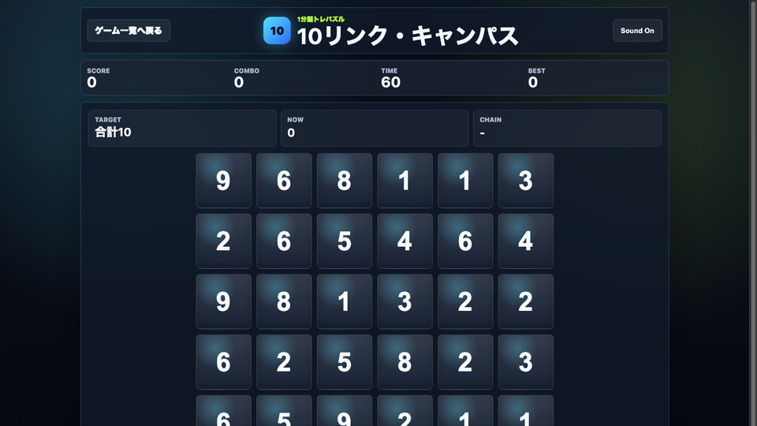

遊び方
- 隣り合う数字カードをクリックまたはタップして合計10を作ります。
- 合計10になると自動でリンク成立です。
- 制限時間60秒で、できるだけ高いスコアを狙います。
パズル / 脳トレ / 無料ブラウザゲーム
10リンク・キャンパスは、数字カードをクリックして合計10を作る無料ブラウザ数字パズルゲームです。1プレイ約60秒なので、授業の合間・通学中・休憩時間の暇つぶしに向いています。

2枚で10を作るより、3〜4枚で10を作るとコンボと時間回復でスコアが伸びます。8や9の周りにある小さい数字を先に探すと安定します。
数字カードをクリックして合計10を作る無料ブラウザ数字パズルゲームです。 1分で終わるテンポと、長いリンクを見つけた時の気持ちよさがあり、休み時間のリフレッシュに向いています。
1分ゲーム、数字パズル、スキマ時間の暇つぶしを探している人におすすめです。8や9の周りにある小さい数字を先に見つけると、長いリンクを作りやすくなります。
はい。無料ブラウザゲーム広場では、インストール不要で無料プレイできます。
スマホ・PC対応です。スマホでは数字カードをタップして選びます。
プレイ時間の目安は約1分です。短時間で遊べるミニゲームを探している人にも向いています。
10リンク・キャンパスと近い無料ブラウザゲームを、目的や端末別の入口から探せます。